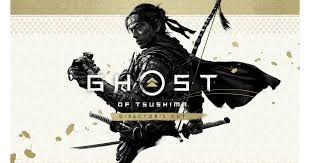
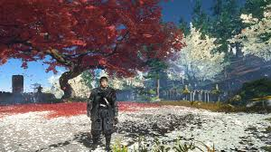

Ghost of Tsushima es un videojuego de acción y aventura desarrollado por Sucker Punch Productions y publicado por Sony Interactive Entertainment. Fue lanzado en julio de 2020 exclusivamente para PlayStation 4 y posteriormente remasterizado para PlayStation 5. Este título ha sido aclamado por su mundo abierto, su narrativa profunda y su estilo visual inspirado en el cine japonés, especialmente en las películas de samuráis.
¿De qué trata Ghost of Tsushima?
La historia de Ghost of Tsushima comienza cuando el imperio mongol invade la isla de Tsushima, en Japón, con la intención de expandir su dominio en Asia. Jin Sakai, el protagonista, es un samurái que lucha al lado de su tío Shimura, el señor de Tsushima, para defender la isla. Sin embargo, la invasión resulta ser devastadora y, tras una feroz batalla, Jin sobrevive, pero su tío es capturado por los mongoles.
Jin, decidido a salvar a su tío y a su hogar, se ve obligado a abandonar las estrictas normas del código samurái y adoptar el papel de un "Fantasma" (Ghost), un guerrero que utiliza tácticas furtivas y métodos poco convencionales, como el sigilo, el uso de armas de largo alcance y la destrucción directa de sus enemigos. Este cambio en su enfoque marca el conflicto interno de Jin, quien lucha con la honra de ser un samurái y su necesidad de adaptarse para salvar su isla.
 